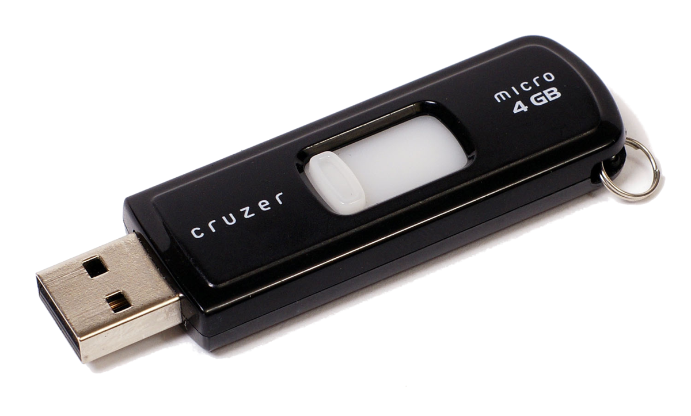
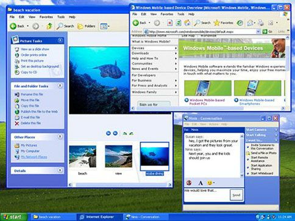
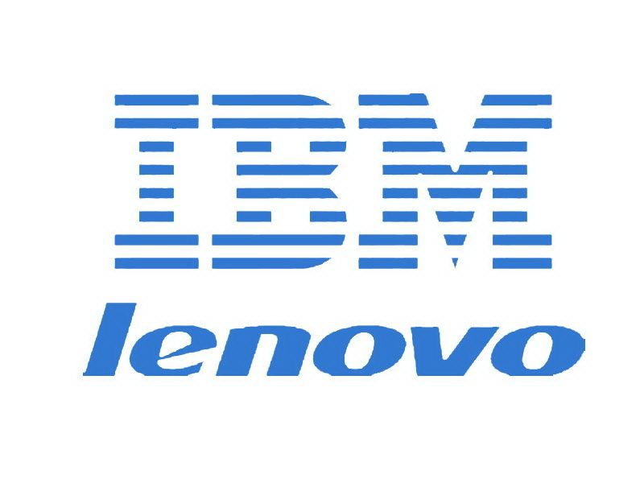

2000
USB Flashdrives Released
 USB Flash drives are introduced. Sometimes referred to as jump drives or memory sticks, these drives consisted of flash memory encased in a small form factor container with a USB interface. They could be used for data storage and in the backing up and transferring of files between various devices. They were faster and had greater data capacity than earlier storage media. Also, they could not be scratched like optical discs and were resilient to magnetic erasure, unlike floppy disks. Drives for floppy disks and optical discs faded in popularity for desktop PCs and laptops in favor of USB ports after flash drives were introduced.
2001
Windows XP
 The Windows XP operating system is released. Based on the Windows NT kernel, XP was considered more stable than previous versions of the operating system. XP was widely adopted by industry and persisted much longer than Microsoft planned. For example, in 2014, 95% of the world's automated teller machines ran XP. Microsoft support for XP ended on April 8, 2014.
2005
Lenovo aquires IBM
 Nearly a quarter century after IBM launched their PC in 1981, they had become merely another player in a crowded marketplace. Lenovo, China's largest manufacturer of PCs, purchased IBM's personal computer business in 2005, largely to gain access to IBM's ThinkPad line of computers and sales force. Lenovo became the largest manufacturer of PCs in the world with the acquisition, later also acquiring IBM's server line of computers.
2007
Nvidia releases Cuda GPU
 Graphic Processing Units (GPUs) have become an important part of multimedia computing and graphics processing. Computer Unified Device Architecture (CUDA) was a concept that allowed for GPUs to do some of the functions usually reserved for the Central Processing Unit (CPU), allowing devices and software to take advantage of the multi-threaded processing techniques and scalability of GPUs. While many saw wide applications in the games industry, uses in many scientific disciplines such as in computational biology and cryptography were also significant.
Graphic Processing Units (GPUs) have become an important part of multimedia computing and graphics processing. Computer Unified Device Architecture (CUDA) was a concept that allowed for GPUs to do some of the functions usually reserved for the Central Processing Unit (CPU), allowing devices and software to take advantage of the multi-threaded processing techniques and scalability of GPUs. While many saw wide applications in the games industry, uses in many scientific disciplines such as in computational biology and cryptography were also significant.
2009
Bitcoin
In 2008, "Satoshi Nakamoto," likely a pseudonym, publishes Bitcoin: A Peer-to-Peer Electronic Cash System, describing the use of peer-to-peer networks to generate a "crypto-currency." In the Bitcoin system, users run software that searches for blocks of data, the discovery of which reward the users with Bitcoins. The transaction is recorded on the system though user information is private. These can then be used online much like cash in the real world. Nakamoto 'mines' the first Bitcoins in January 2009 and a year later a user used them to order two pizzas. Bitcoins' value exploded in November 2013 before a gradual devaluation. Bitcoin's anonymous nature, along with the electronic nature of the currency, has led to its adoption by some criminal organizations.